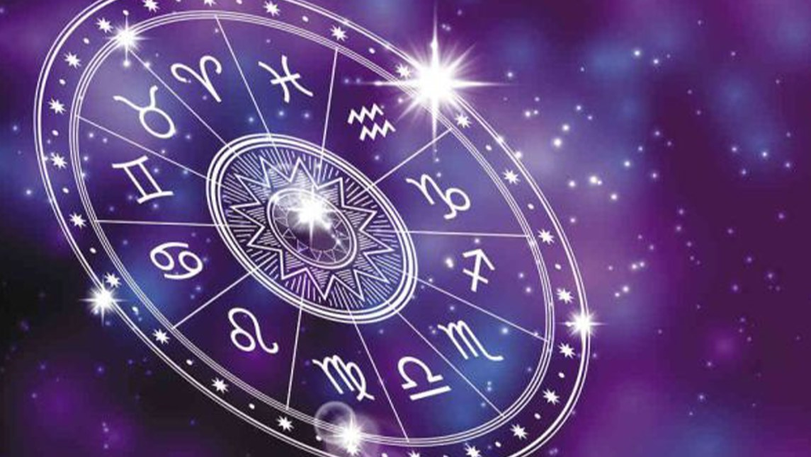

La #Astrologia es matemática, y esto quiere decir que es un reloj. Ella te anuncia con anticipación cuándo será el momento para cada cosa en tu vida, así puedes prepararte y aprovechar al máximo las oportunidades. Claro que la mayoría de la gente no las conoce y, por lo general, rechaza las oportunidades apegándose al pasado y deseando que todo se mantenga igual que el ayer. Pero el reloj es el reloj y no hay nada que puedas hacer para cuando llegue el TIEMPO de tener determinados aprendizajes.
¿Cuándo es el tiempo de #Jupiter? ¿Cuándo el tiempo de #Saturno? ¿Cuándo el tiempo de #Urano? ¿Cuándo el tiempo de #Plutón? ¿Cuándo el tiempo de #Neptuno?
Estos aprendizajes los integraremos según nuestro propio nivel de conciencia. Así mismo, los eventos ocurridos también dependerán de cómo nosotros manejemos los temas que tocan esos tránsitos, las casas de nuestra carta natal en donde caen, y que por supuesto requiere de una lectura personal sobre cada persona. Así como cada uno es único, la #CartaNatal es tu propia y única huella digital.
Aquí solamente les compartiré de manera sucinta y muy por arriba; algunos de los ciclos que sabemos traen determinados aprendizajes para todos los seres humanos encarnados en este mundo. 28/30 años: la #Luna progresada regresa a su lugar natal. Este es un momento importantísimo en donde nos preparamos para el primer retorno de Saturno. Empezamos a sentir que somos un poco más nosotros mismos y le damos una vuelta a nuestras necesidades más imperantes. En estos años seguro habrá algún suceso que te hará aprender a amar y amarte mejor. Por ejemplo, cuando yo tuve mi retorno lunar progresado quedé embaraza y me convertí en mamá. 28/30 años: el retorno de la Luna progresada es la antesala a Saturno en #tránsito regresando a su lugar #natal. Ahora sí llegó el momento de madurar y asumir algún tipo de responsabilidad. Para algunos es a los 28, para otros a los 29 y para la gran mayoría a los 30. Podemos sentirnos exigidos, solos, presionados, pesados. ¡El famoso retorno de Saturno! En verdad, este es el tiempo de crecer. La mayoría de las personas a esta edad se reciben, se van a vivir solos, se casan, tienen hijos, etc.
37/38 años: los #Eclipses y los #Nodos del momento regresan a su lugar natal. Esto ocurrió también a los 19 años, pero este tiempo es el Gran Tiempo de alinearnos con lo que vinimos a hacer. Son dos años de grandes movimientos, que nos preparan para la oposición Urano-Urano que sigue.
40/42 años: Urano de tránsito le hace opción al Urano natal. Tiempo de liberación o tiempo de locura, tú eliges. Neptuno en tránsito en paralelo le hace cuadratura al Neptuno natal. Tiempo de observar cuánta ilusión hay dentro de tu corazón. Aquí verás cuánto has negado, excluido y tapado tu autenticidad y cuántos cuentos te has contado. Si lo sabes aprovechar, son años de gran avance espiritual.
44/45 años: Saturno de tránsito en oposición al Saturno natal. Aquí se pone de manifiesto cuánto verdaderamente miraste tu pensamiento ilusorio y cuánto te liberaste REALMENTE de él (es decir, se revela el trabajo que has hecho del ciclo anterior)... o si tan solo te comportaste como un adolescente y sumaste más nubes en tu casita del árbol. Pueden ser unos años muy duros porque nos muestran sin tapujos -como le gusta a Saturno- la realidad de nuestra realidad. Pueden también ser años maravillosos, si la liberación (no ilusoria) en efecto tuvo lugar.
50/51 años: #Quiron de tránsito regresa a su posición natal. ¡Puf! ¡MOMENTAZO! Aquí vas a poder ver realmente cuánto trabajaste tu herida ilusoria. Son dos años donde se vuelve a abrir la compuerta a tu herida más profunda. ¿Estás dispuesto a asumirla desde la adultez? Por lo general, la mayoría de las personas caen en el abismo de su Quiron, porque NO TIENEN IDEA DE CUÁL ES ESA HERIDA. Este tiempo es la preparación para el segundo retorno de Saturno. 55 años: la Luna progresada regresa por segunda vez a su posición natal. ¿Cuánto has aprendido sobre vos mismo desde tus 28 años? ¿Seguís teniendo las mismas necesidades? ¿Cómo se encuentra tu lugar regresivo, tu zona de comfort, tus ideales infantiles? ¿Ya has aprendido a amar -y amarte- como un adulto?
56/57 años: los Eclipses y los Nodos del momento regresan a su lugar natal por tercera vez (ya ocurrió a tus 19 y a tus 37 años). Otra oportunidad para alinearte con lo que viniste a hacer y soltar lo que viniste a soltar. Cuanto más te resistas y más grande te pongas, más difíciles se ponen estos eventos. Cuanto más los ayudes, más avance y liberación experimentas.
56/60 años: Saturno en tránsito regresa a su lugar natal por segunda vez. Mr. Realidad viene a probar tu madurez. Ya pasaron entre 28 y 30 años de la última vez que se juntaron y, claro, no deberías ser aquel mismo joven con tantas confusiones. Si te estuviste escondiendo de tu realidad, serán años durísimos. Si estás bien plantado en vos mismo y fuiste lo suficientemente valiente para mirar de frente tu vida y lo que has hecho de ella, es un tiempo de gran afirmación. Ahora sí, con todo lo integrado, ¿quién te para?
Los ciclos siguen y hay muchos más, como así también están los #tránsitos personales de cada uno de nosotros y de otros grandes planetas, como por ejemplo Plutón, que depende mucho donde lo tenemos al nacer y qué movimientos hará con nuestra luna, #sol, #ascendente y demás planetas personales, marcando también el pulso de nuestra transformación. El #Cielo te regala un gran y perfecto reloj como una llave a tu verdadera #evolución. Cada ciclo es una llave. Y si decidís usar la llaves del Cielo, tenlo por seguro: vas -vamos- a V O L A R.